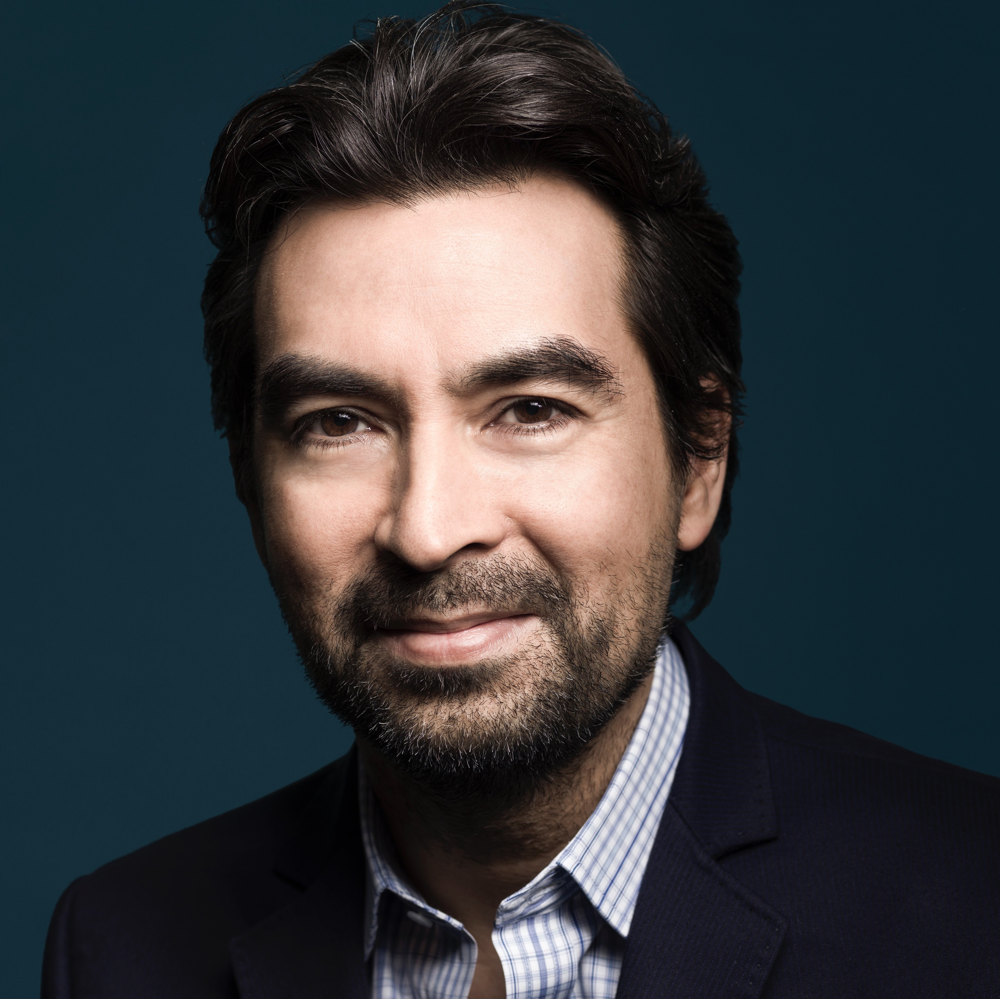
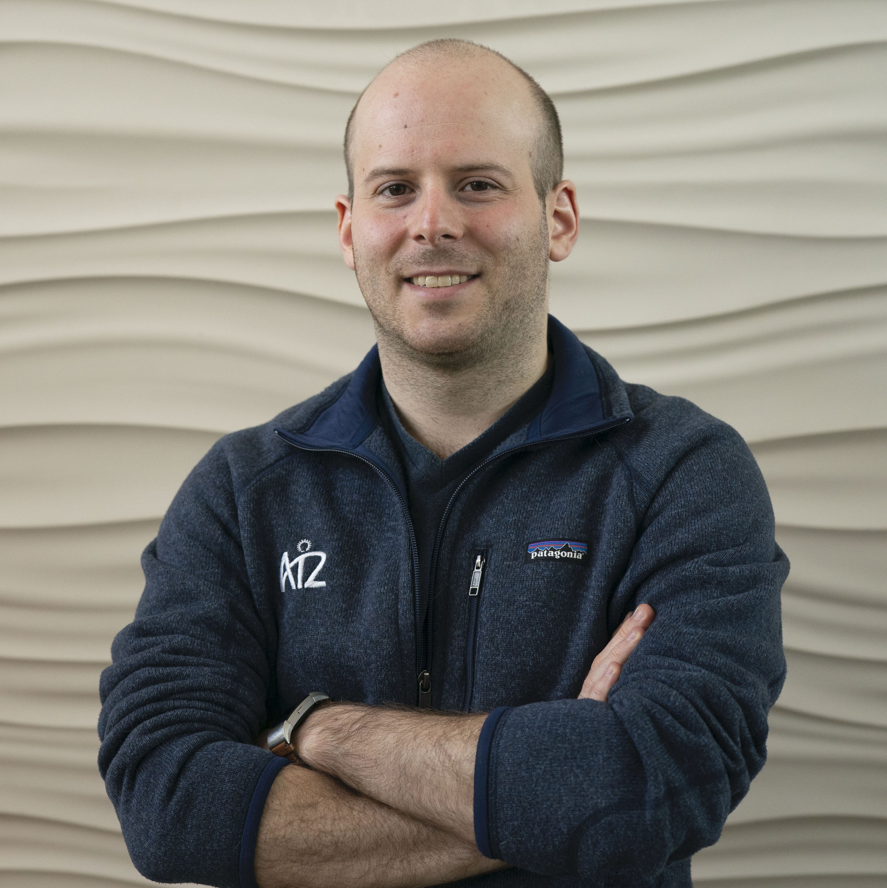

AI research over the past few decades has highlighted the strengths and weaknesses of both symbolic and machine learning approaches to AI, with some weaknesses in one being strengths in the other. Much is also known about the fragmentation of the field along these two approaches. However, recent discussions in AI have highlighted the need to integrate both symbolic and sub-symbolic methods, in a hybrid approach to AI, to create novel techniques that leverage both reasoning and learning.
This workshop seeks to contribute to this discussion by exploring the following:
- a systems approach to AI,
- the use of composable AI components,
- leveraging the best of both symbolic and sub-symbolic techniques in hybrid reasoning and learning architectures.
Dates: November 3-7, 2021
Invited Speakers and Panel

Dr. Alexander Gray
IBM
Logical Neural Networks: Tow
Recently there has been renewed interest in the long-standing goal of somehow unifying the capabilities of both statistical
AI (learning and prediction) and symbolic AI (knowledge representation and reasoning). We introduce Logical Neural Networks,
a new neuro-symbolic framework which identifies and leverages a 1-to-1 correspondence between an artificial neuron and a
logic gate in a weighted form of real-valued logic. With a few key modifications of the standard modern neural network,
we construct a model which performs the equivalent of logical inference rules such as modus ponens within the message-passing
paradigm of neural networks, and utilizes a new form of loss, contradiction loss, which maximizes logical consistency in the
face of imperfect and inconsistent knowledge. The result differs significantly from other neuro-symbolic ideas in that 1) the
model is fully disentangled and understandable since every neuron has a meaning, 2) the model can perform both classical
logical deduction and its real-valued generalization (which allows for the representation and propagation of uncertainty)
exactly, as special cases, as opposed to approximately as in nearly all other approaches, and 3) the model is compositional
and modular, allowing for fully reusable knowledge across talks. The framework has already enabled state-of-the-art results
in several problems, including question answering.
Alexander Gray serves as VP of Foundations of AI at IBM, and currently leads a global research program in Neuro-Symbolic AI at IBM.
He received AB degrees in Applied Mathematics and Computer Science from UC Berkeley and a PhD in Computer Science from Carnegie Mellon University.
Before IBM he worked at NASA, served as a tenured Associate Professor at the Georgia Institute of Technology,
and co-founded and sold an AI startup in Silicon Valley. His work on machine learning, statistics, and algorithms for massive datasets,
predating the movement of "big data" in industry, has been honored with a number of research honors including multiple best paper awards,
the NSF CAREER Award, selection as a National Academy of Sciences Kavli Scholar, and service as a member of the
2010 National Academy of Sciences Committee on the Analysis of Massive Data. His current interests generally revolve around the
injection of non-mainstream ideas into ML/AI to attempt to break through long-standing bottlenecks of the field.

Dr. Antoine Bosselut
École Polytechnique Fédéral de Lausanne (EPFL)
Antoine Bosselut is an assistant professor in the School of Computer and Communication Sciences at the École Polytechnique Fédéral de Lausanne (EPFL).
Previously, he was a postdoctoral scholar at Stanford University and a Young Investigator at the Allen Institute for AI (AI2).
He completed his PhD at the University of Washington in 2020.
He was recently named as one of the Forbes 30 under 30 list for Science and Healthcare.
His research is on building knowledge-aware NLP systems, specializing in commonsense representation and reasoning.
Dr. Pasquale Minervini
University College London (UCL)
Pasquale Minervini is a Senior Research Fellow at University College London (UCL).
He received a PhD in Computer Science from University of Bari, Italy, with a thesis on relational learning.
After his PhD, he worked as a postdoc researcher at the University of Bari, and at the INSIGHT Centre for
Data Analytics (INSIGHT), where he worked in close collaboration with researchers and engineers from INSIGHT
and Fujitsu Ireland Research and Innovation. Pasquale published peer-reviewed papers in top-tier AI conferences,
receiving three best paper awards (including an Outstanding Paper Award at ICLR 2021), participated in the
organisation of tutorials on Explainable AI and relational learning (three for AAAI, one for ECML, and others),
and was a guest lecturer at UCL and at the Summer School on Statistical Relational Artificial Intelligence.
He is the main inventor of a patent application assigned to Fujitsu Ltd, and he was recently awarded a seven-figures
H2020 research grant involving applications of relational learning to cancer research, and several other research
grants from industry. For more information about him, see http://www.neuralnoise.com
Dr. Jaehun Lee
Samsung Research
Dr. Jaehun Lee is currently a researcher at Samsung Research, working in the space of large knowledge graph construction,
reasoning and its applications for mobile phones and consumer electronics. The applications include search and recommendations
for virtual assistants, diagnosis and treatment recommendations for call center operation, data curation to unify heterogeneous data.
In the past, he has worked on various research topics such as knowledge representation, ontology reasoning, and machine learning.